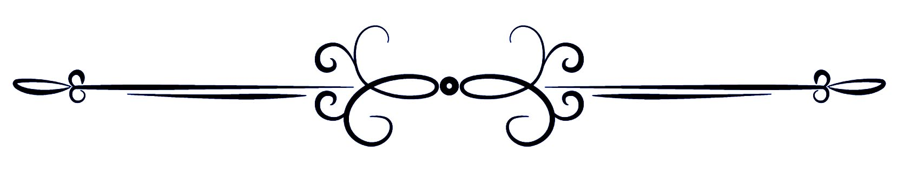

La maison Gusto's est heureuse de vous présenter ses macarons de saison.
Le Majestueux
Deux coques craquantes garnies d’une crème fondante infusée au thé Marie-Antoinette. La couleur bleue est obtenue à partir d’ingrédients naturels : la spiruline et la violette. Une création de la maison Gusto’s, reflet du thé Marie-Antoinette : mariage de thés noirs de Chine et d’Inde accompagnés de pétales de rose, d’agrume et de miel.

La Framboise Gourmande
Deux coques craquantes garnies de confiture de Framboise façon Grand-mère.
Le Caramel
Grand classique de la maison, au caramel à la fleur de Sel de Guérande.
Le Passion
Cette semaine uniquement, confiture au fruit de la passion, écrasé de Maracuya.
La Rose délicate
Deux coques amande au coeur moelleux garnies d’un crémeux parfumée à la rose pâle.
Le Réglisse d’Antan
Ganache montée au réglisse façon Grand-mère et pointe d'orgeat.
Le Rubis
Coeur de coques à la cerise kirchée, ganache de chantilly et chocolat blanc.
Le sournois
Jettez un coup d'oeil aux dessous de l'ambassadeur.
Le Citron
Deux coques amande et zestes de Yuzu garnies d’une mousse de cédrat corse.
Le Chocolaté
Deux coques amande garnies d’une ganache de chocolat intense.